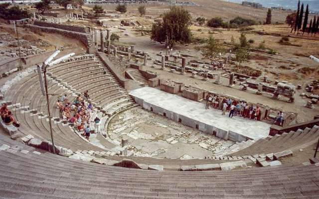
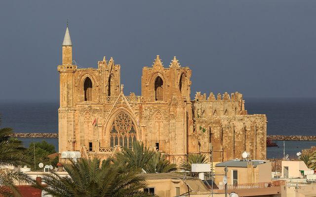

Prehistoria y Neolítico
a. C. 12.000 – 3000 · 8 lugares
 Yacimiento de ArslantepeMalatya · Calcolítico / Edad del Bronce / Neohitita
Yacimiento de ArslantepeMalatya · Calcolítico / Edad del Bronce / Neohitita GöbeklitepeŞanlıurfa · Neolítico
GöbeklitepeŞanlıurfa · Neolítico Yacimiento de ÇatalhöyükKonya · Neolítico
Yacimiento de ÇatalhöyükKonya · Neolítico Aşıklı HöyükAksaray · Neolítico
Aşıklı HöyükAksaray · Neolítico Yacimiento de KarahantepeŞanlıurfa · Neolítico
Yacimiento de KarahantepeŞanlıurfa · Neolítico Cueva de KarainAntalya · PaleolíticoMuseo de KırklareliKırklareli · Prehistoria / TracioMuseo Arqueológico de ŞanlıurfaŞanlıurfa · Neolítico – Otomano
Cueva de KarainAntalya · PaleolíticoMuseo de KırklareliKırklareli · Prehistoria / TracioMuseo Arqueológico de ŞanlıurfaŞanlıurfa · Neolítico – OtomanoEdad del Bronce e hititas
a. C. 3000 – 1200 · 16 lugares
Yacimiento de ArslantepeMalatya · Calcolítico / Edad del Bronce / Neohitita HattusaÇorum · Hitita
HattusaÇorum · Hitita TroyaÇanakkale · Edad del Bronce / Romano
TroyaÇanakkale · Edad del Bronce / Romano Museo y yacimiento de AlacahöyükÇorum · Edad del Bronce / Hitita
Museo y yacimiento de AlacahöyükÇorum · Edad del Bronce / Hitita Yacimiento de Enkomi (Alasia)Gazimağusa (Famagusta) · Edad del Bronce
Yacimiento de Enkomi (Alasia)Gazimağusa (Famagusta) · Edad del Bronce Yacimiento de Tlos (Fethiye)Muğla · Edad del Bronce – Otomano
Yacimiento de Tlos (Fethiye)Muğla · Edad del Bronce – Otomano Yacimiento de HarránŞanlıurfa · Edad del Bronce – Edad Media
Yacimiento de HarránŞanlıurfa · Edad del Bronce – Edad Media Yacimiento de IasosMuğla · Edad del Bronce – Bizantino
Yacimiento de IasosMuğla · Edad del Bronce – Bizantino Museo Arqueológico de Kaman KalehöyükKırşehir · Edad del Bronce / Edad del Hierro
Museo Arqueológico de Kaman KalehöyükKırşehir · Edad del Bronce / Edad del Hierro Museo y yacimiento de Karatepe-AslantaşOsmaniye · Neohitita (siglo 8 a. C.)
Museo y yacimiento de Karatepe-AslantaşOsmaniye · Neohitita (siglo 8 a. C.) Yacimiento de KültepeKayseri · Edad del Bronce
Yacimiento de KültepeKayseri · Edad del Bronce Yacimiento de SalaminaGazimağusa (Famagusta) · Edad del Bronce / Romano / Bizantino
Yacimiento de SalaminaGazimağusa (Famagusta) · Edad del Bronce / Romano / Bizantino Yacimiento de YesemekGaziantep · Neohitita
Yacimiento de YesemekGaziantep · Neohitita Museo de Arqueología Subacuática de BodrumMuğla · Edad del Bronce – Otomano
Museo de Arqueología Subacuática de BodrumMuğla · Edad del Bronce – Otomano Museo de BoğazköyÇorum · HititaMuseo Arqueológico de ŞanlıurfaŞanlıurfa · Neolítico – Otomano
Museo de BoğazköyÇorum · HititaMuseo Arqueológico de ŞanlıurfaŞanlıurfa · Neolítico – OtomanoReinos de la Edad del Hierro
a. C. 1200 – 550 · 38 lugares
Yacimiento de ArslantepeMalatya · Calcolítico / Edad del Bronce / Neohitita Yacimiento de JantoAntalya · Licio
Yacimiento de JantoAntalya · Licio Museo de GordionAnkara · Frigio
Museo de GordionAnkara · Frigio Tumba rupestre de AmintasMuğla · Licio (siglo 4 a. C.)
Tumba rupestre de AmintasMuğla · Licio (siglo 4 a. C.) Yacimiento de ArykandaAntalya · Licio / Romano
Yacimiento de ArykandaAntalya · Licio / Romano Yacimiento del Letoon (Fethiye)Muğla · Licio / Romano
Yacimiento del Letoon (Fethiye)Muğla · Licio / Romano Yacimiento de Pinara (Fethiye)Muğla · Licio / RomanoYacimiento de Tlos (Fethiye)Muğla · Edad del Bronce – Otomano
Yacimiento de Pinara (Fethiye)Muğla · Licio / RomanoYacimiento de Tlos (Fethiye)Muğla · Edad del Bronce – Otomano Castillo de HarputElazığ · Urartiano / Edad MediaYacimiento de HarránŞanlıurfa · Edad del Bronce – Edad MediaYacimiento de IasosMuğla · Edad del Bronce – BizantinoMuseo Arqueológico de Kaman KalehöyükKırşehir · Edad del Bronce / Edad del HierroMuseo y yacimiento de Karatepe-AslantaşOsmaniye · Neohitita (siglo 8 a. C.)
Castillo de HarputElazığ · Urartiano / Edad MediaYacimiento de HarránŞanlıurfa · Edad del Bronce – Edad MediaYacimiento de IasosMuğla · Edad del Bronce – BizantinoMuseo Arqueológico de Kaman KalehöyükKırşehir · Edad del Bronce / Edad del HierroMuseo y yacimiento de Karatepe-AslantaşOsmaniye · Neohitita (siglo 8 a. C.) Yacimiento de CaunoMuğla · Cario / Helenístico / RomanoMuseo y yacimiento de las Tumbas RealesGazimağusa (Famagusta) · Edad del Hierro (siglo 8–7 a. C.)
Yacimiento de CaunoMuğla · Cario / Helenístico / RomanoMuseo y yacimiento de las Tumbas RealesGazimağusa (Famagusta) · Edad del Hierro (siglo 8–7 a. C.) Yacimiento de LabraundaMuğla · Cario / Helenístico
Yacimiento de LabraundaMuğla · Cario / Helenístico Museo de las Civilizaciones Licias y yacimiento de AndriakeAntalya · Licio / Romano
Museo de las Civilizaciones Licias y yacimiento de AndriakeAntalya · Licio / Romano Yacimiento de LimyraAntalya · Licio / Romano
Yacimiento de LimyraAntalya · Licio / Romano Yacimiento de Midas (Yazılıkaya)Eskişehir · Frigio
Yacimiento de Midas (Yazılıkaya)Eskişehir · Frigio Tumba Monumental y Complejo Museístico de Uzunyuva (Milas)Muğla · Cario (siglo 4 a. C.)
Tumba Monumental y Complejo Museístico de Uzunyuva (Milas)Muğla · Cario (siglo 4 a. C.) Yacimiento de MyraAntalya · Licio / Romano
Yacimiento de MyraAntalya · Licio / Romano Yacimiento de OlymposAntalya · Licio / Romano
Yacimiento de OlymposAntalya · Licio / Romano Yacimiento de PataraAntalya · Licio / Romano
Yacimiento de PataraAntalya · Licio / Romano Yacimiento de PesinunteEskişehir · Frigio / Helenístico / Romano
Yacimiento de PesinunteEskişehir · Frigio / Helenístico / Romano Yacimiento de FaselisAntalya · Licio / Romano
Yacimiento de FaselisAntalya · Licio / Romano Yacimiento de SardesManisa · Lidio / Romano
Yacimiento de SardesManisa · Lidio / Romano Yacimiento de SimenaAntalya · Licio / Bizantino
Yacimiento de SimenaAntalya · Licio / Bizantino Fortaleza de VanVan · Urartiano – OtomanoYacimiento de YesemekGaziantep · Neohitita
Fortaleza de VanVan · Urartiano – OtomanoYacimiento de YesemekGaziantep · Neohitita Castillo de ÇavuştepeVan · Urartiano (siglo 8–7 a. C.)Museo de Arqueología Subacuática de BodrumMuğla · Edad del Bronce – Otomano
Castillo de ÇavuştepeVan · Urartiano (siglo 8–7 a. C.)Museo de Arqueología Subacuática de BodrumMuğla · Edad del Bronce – Otomano Museo de ErzincanErzincan · Urartiano / Varios periodosMuseo de FethiyeMuğla · Licio / RomanoMuseo de KırklareliKırklareli · Prehistoria / Tracio
Museo de ErzincanErzincan · Urartiano / Varios periodosMuseo de FethiyeMuğla · Licio / RomanoMuseo de KırklareliKırklareli · Prehistoria / Tracio Museo Monumento del Mausoleo de BodrumMuğla · Cario (siglo 4 a. C.)Museo de UşakUşak · Lidio / Varios periodos
Museo Monumento del Mausoleo de BodrumMuğla · Cario (siglo 4 a. C.)Museo de UşakUşak · Lidio / Varios periodos Museo de VanVan · Urartiano / Varios periodosMuseo Arqueológico de ŞanlıurfaŞanlıurfa · Neolítico – Otomano
Museo de VanVan · Urartiano / Varios periodosMuseo Arqueológico de ŞanlıurfaŞanlıurfa · Neolítico – OtomanoÉpoca clásica y helenística
a. C. 550 – 30 · 61 lugares
 Museo y yacimiento de AfrodisiasAydın · Helenístico / Romano
Museo y yacimiento de AfrodisiasAydın · Helenístico / Romano Acrópolis de PérgamoIzmir · Helenístico / Romano
Acrópolis de PérgamoIzmir · Helenístico / Romano
Asclepeion de PérgamoIzmir · Helenístico / Romano ÉfesoIzmir · Helenístico / Romano
ÉfesoIzmir · Helenístico / Romano Yacimiento de Hierápolis (Pamukkale)Denizli · Helenístico / Romano
Yacimiento de Hierápolis (Pamukkale)Denizli · Helenístico / Romano Monte NemrutAdıyaman · Helenístico (Comagene)
Monte NemrutAdıyaman · Helenístico (Comagene) Yacimiento del Ágora de EsmirnaIzmir · Helenístico / RomanoYacimiento de EgasManisa · Helenístico / Romano
Yacimiento del Ágora de EsmirnaIzmir · Helenístico / RomanoYacimiento de EgasManisa · Helenístico / Romano Yacimiento de AlabandaAydın · Helenístico / Romano
Yacimiento de AlabandaAydın · Helenístico / Romano Yacimiento de Alaşehir (Filadelfia)Manisa · Helenístico / Bizantino
Yacimiento de Alaşehir (Filadelfia)Manisa · Helenístico / Bizantino Yacimiento de Alejandría de TróadeÇanakkale · Helenístico / Romano
Yacimiento de Alejandría de TróadeÇanakkale · Helenístico / Romano Yacimiento de AlindaAydın · Helenístico / Romano
Yacimiento de AlindaAydın · Helenístico / Romano Ciudad antigua de SyedraAntalya · Helenístico / Romano
Ciudad antigua de SyedraAntalya · Helenístico / Romano Yacimiento de Antioquía de PisidiaIsparta · Helenístico / Romano
Yacimiento de Antioquía de PisidiaIsparta · Helenístico / Romano Yacimiento de Apolo EsmintioÇanakkale · Helenístico
Yacimiento de Apolo EsmintioÇanakkale · Helenístico Yacimiento de ArsameiaAdıyaman · Helenístico (Comagene)
Yacimiento de ArsameiaAdıyaman · Helenístico (Comagene) Yacimiento de AssosÇanakkale · Arcaico / Helenístico
Yacimiento de AssosÇanakkale · Arcaico / Helenístico Yacimiento de BlaundosUşak · Helenístico / Romano
Yacimiento de BlaundosUşak · Helenístico / Romano Teatro antiguo de BodrumMuğla · Helenístico / Romano
Teatro antiguo de BodrumMuğla · Helenístico / Romano Yacimiento de TrípolisDenizli · Helenístico / Romano
Yacimiento de TrípolisDenizli · Helenístico / Romano Templo de Apolo en DídimaAydın · Helenístico / RomanoYacimiento de Tlos (Fethiye)Muğla · Edad del Bronce – OtomanoYacimiento de Filyos (Tios)Zonguldak · Helenístico – BizantinoYacimiento de HarránŞanlıurfa · Edad del Bronce – Edad MediaYacimiento de IasosMuğla · Edad del Bronce – Bizantino
Templo de Apolo en DídimaAydın · Helenístico / RomanoYacimiento de Tlos (Fethiye)Muğla · Edad del Bronce – OtomanoYacimiento de Filyos (Tios)Zonguldak · Helenístico – BizantinoYacimiento de HarránŞanlıurfa · Edad del Bronce – Edad MediaYacimiento de IasosMuğla · Edad del Bronce – Bizantino Fortaleza de Yenikale en KahtaAdıyaman · Comagene / Edad Media
Fortaleza de Yenikale en KahtaAdıyaman · Comagene / Edad Media Yacimiento de KanlıdivaneMersin · Helenístico / Romano / Bizantino
Yacimiento de KanlıdivaneMersin · Helenístico / Romano / Bizantino Yacimiento de CastabalaOsmaniye · Helenístico / Romano / Edad MediaYacimiento de CaunoMuğla · Cario / Helenístico / Romano
Yacimiento de CastabalaOsmaniye · Helenístico / Romano / Edad MediaYacimiento de CaunoMuğla · Cario / Helenístico / Romano Yacimiento de ClarosIzmir · Arcaico / RomanoYacimiento de ClazómenasIzmir · ArcaicoYacimiento de LabraundaMuğla · Cario / Helenístico
Yacimiento de ClarosIzmir · Arcaico / RomanoYacimiento de ClazómenasIzmir · ArcaicoYacimiento de LabraundaMuğla · Cario / Helenístico Yacimiento de LaginaMuğla · Helenístico / Romano
Yacimiento de LaginaMuğla · Helenístico / Romano Yacimiento de LaodiceaDenizli · Helenístico / Romano
Yacimiento de LaodiceaDenizli · Helenístico / Romano Yacimiento de MagnesiaAydın · Helenístico / Romano
Yacimiento de MagnesiaAydın · Helenístico / Romano Museo de Akhisar y Necrópolis de Tepe (Manisa)Manisa · Helenístico / Romano
Museo de Akhisar y Necrópolis de Tepe (Manisa)Manisa · Helenístico / Romano Yacimiento de MetrópolisIzmir · Helenístico / Romano
Yacimiento de MetrópolisIzmir · Helenístico / Romano Yacimiento de Euromos (Milas)Muğla · Helenístico / Romano
Yacimiento de Euromos (Milas)Muğla · Helenístico / Romano Yacimiento de MiletoAydın · Arcaico / Romano
Yacimiento de MiletoAydın · Arcaico / Romano Yacimiento de CnidoMuğla · Clásico / Helenístico
Yacimiento de CnidoMuğla · Clásico / Helenístico Yacimiento de Nisa (Sultanhisar)Aydın · Helenístico / Romano
Yacimiento de Nisa (Sultanhisar)Aydın · Helenístico / Romano Yacimiento de PergeAntalya · Helenístico / Romano
Yacimiento de PergeAntalya · Helenístico / Romano Yacimiento de PerreAdıyaman · Comagene / RomanoYacimiento de PesinunteEskişehir · Frigio / Helenístico / Romano
Yacimiento de PerreAdıyaman · Comagene / RomanoYacimiento de PesinunteEskişehir · Frigio / Helenístico / Romano Yacimiento de PrieneAydın · Helenístico
Yacimiento de PrieneAydın · Helenístico Yacimiento de SagalassosBurdur · Helenístico / Romano
Yacimiento de SagalassosBurdur · Helenístico / Romano Isla de Sedir (Cedreas)Muğla · Helenístico / Romano
Isla de Sedir (Cedreas)Muğla · Helenístico / Romano Yacimiento de SideAntalya · Helenístico / RomanoTumba Monumental de SofrazAdıyaman · Helenístico / Romano
Yacimiento de SideAntalya · Helenístico / RomanoTumba Monumental de SofrazAdıyaman · Helenístico / Romano Yacimiento de SoliLefke (Lefka) · Arcaico / Romano
Yacimiento de SoliLefke (Lefka) · Arcaico / Romano Yacimiento de EstratoniceaMuğla · Helenístico – Otomano
Yacimiento de EstratoniceaMuğla · Helenístico – Otomano Yacimiento de TeosIzmir · Arcaico / Helenístico
Yacimiento de TeosIzmir · Arcaico / Helenístico Yacimiento de TermessosAntalya · Helenístico / Romano
Yacimiento de TermessosAntalya · Helenístico / Romano Yacimiento de UzuncaburçMersin · Helenístico / RomanoFortaleza de VanVan · Urartiano – Otomano
Yacimiento de UzuncaburçMersin · Helenístico / RomanoFortaleza de VanVan · Urartiano – Otomano Palacio de VouniLefke (Lefka) · Clásico (siglo 5 a. C.)
Palacio de VouniLefke (Lefka) · Clásico (siglo 5 a. C.) Yacimiento de ZeugmaGaziantep · Helenístico / RomanoYacimiento de ÇevlikHatay · Helenístico / Romano
Yacimiento de ZeugmaGaziantep · Helenístico / RomanoYacimiento de ÇevlikHatay · Helenístico / Romano Castillo de ŞanlıurfaŞanlıurfa · Helenístico – Edad MediaMuseo de Arqueología Subacuática de BodrumMuğla · Edad del Bronce – OtomanoMuseo Arqueológico de ŞanlıurfaŞanlıurfa · Neolítico – Otomano
Castillo de ŞanlıurfaŞanlıurfa · Helenístico – Edad MediaMuseo de Arqueología Subacuática de BodrumMuğla · Edad del Bronce – OtomanoMuseo Arqueológico de ŞanlıurfaŞanlıurfa · Neolítico – OtomanoÉpoca romana
a. C. 30 – d. C. 330 · 86 lugares
Museo y yacimiento de AfrodisiasAydın · Helenístico / RomanoAcrópolis de PérgamoIzmir · Helenístico / RomanoAsclepeion de PérgamoIzmir · Helenístico / Romano Basílica Roja de BergamaIzmir · Romano / BizantinoÉfesoIzmir · Helenístico / RomanoYacimiento de Hierápolis (Pamukkale)Denizli · Helenístico / RomanoTroyaÇanakkale · Edad del Bronce / RomanoYacimiento del Ágora de EsmirnaIzmir · Helenístico / RomanoYacimiento de EgasManisa · Helenístico / Romano
Basílica Roja de BergamaIzmir · Romano / BizantinoÉfesoIzmir · Helenístico / RomanoYacimiento de Hierápolis (Pamukkale)Denizli · Helenístico / RomanoTroyaÇanakkale · Edad del Bronce / RomanoYacimiento del Ágora de EsmirnaIzmir · Helenístico / RomanoYacimiento de EgasManisa · Helenístico / Romano Yacimiento de AizanoiKütahya · RomanoYacimiento de AlabandaAydın · Helenístico / RomanoYacimiento de Alejandría de TróadeÇanakkale · Helenístico / RomanoYacimiento de AlindaAydın · Helenístico / Romano
Yacimiento de AizanoiKütahya · RomanoYacimiento de AlabandaAydın · Helenístico / RomanoYacimiento de Alejandría de TróadeÇanakkale · Helenístico / RomanoYacimiento de AlindaAydın · Helenístico / Romano Yacimiento de AnavarzaAdana · Romano / Bizantino
Yacimiento de AnavarzaAdana · Romano / Bizantino Yacimiento de AnemurioMersin · Romano / BizantinoCiudad antigua de SyedraAntalya · Helenístico / RomanoYacimiento de Antioquía de PisidiaIsparta · Helenístico / RomanoYacimiento de ArykandaAntalya · Licio / Romano
Yacimiento de AnemurioMersin · Romano / BizantinoCiudad antigua de SyedraAntalya · Helenístico / RomanoYacimiento de Antioquía de PisidiaIsparta · Helenístico / RomanoYacimiento de ArykandaAntalya · Licio / Romano AspendosAntalya · RomanoYacimiento de BlaundosUşak · Helenístico / RomanoTeatro antiguo de BodrumMuğla · Helenístico / RomanoYacimiento de TrípolisDenizli · Helenístico / RomanoTemplo de Apolo en DídimaAydın · Helenístico / Romano
AspendosAntalya · RomanoYacimiento de BlaundosUşak · Helenístico / RomanoTeatro antiguo de BodrumMuğla · Helenístico / RomanoYacimiento de TrípolisDenizli · Helenístico / RomanoTemplo de Apolo en DídimaAydın · Helenístico / Romano Torre Macedonia de EdirneEdirne · Romano / Bizantino / Otomano
Torre Macedonia de EdirneEdirne · Romano / Bizantino / Otomano Casas del Ladera de ÉfesoIzmir · Romano / BizantinoYacimiento del Letoon (Fethiye)Muğla · Licio / RomanoYacimiento de Pinara (Fethiye)Muğla · Licio / RomanoYacimiento de Tlos (Fethiye)Muğla · Edad del Bronce – OtomanoYacimiento de Filyos (Tios)Zonguldak · Helenístico – BizantinoÁrea de mosaicos de GermaniciaKahramanmaraş · RomanoYacimiento de HadrianópolisKarabük · Romano / BizantinoYacimiento de HarránŞanlıurfa · Edad del Bronce – Edad MediaYacimiento de IasosMuğla · Edad del Bronce – BizantinoYacimiento de KanlıdivaneMersin · Helenístico / Romano / BizantinoYacimiento de CastabalaOsmaniye · Helenístico / Romano / Edad MediaYacimiento de CaunoMuğla · Cario / Helenístico / Romano
Casas del Ladera de ÉfesoIzmir · Romano / BizantinoYacimiento del Letoon (Fethiye)Muğla · Licio / RomanoYacimiento de Pinara (Fethiye)Muğla · Licio / RomanoYacimiento de Tlos (Fethiye)Muğla · Edad del Bronce – OtomanoYacimiento de Filyos (Tios)Zonguldak · Helenístico – BizantinoÁrea de mosaicos de GermaniciaKahramanmaraş · RomanoYacimiento de HadrianópolisKarabük · Romano / BizantinoYacimiento de HarránŞanlıurfa · Edad del Bronce – Edad MediaYacimiento de IasosMuğla · Edad del Bronce – BizantinoYacimiento de KanlıdivaneMersin · Helenístico / Romano / BizantinoYacimiento de CastabalaOsmaniye · Helenístico / Romano / Edad MediaYacimiento de CaunoMuğla · Cario / Helenístico / Romano Yacimiento de CibyraBurdur · RomanoYacimiento de ClarosIzmir · Arcaico / RomanoYacimiento de LaginaMuğla · Helenístico / RomanoYacimiento de LaodiceaDenizli · Helenístico / RomanoMuseo de las Civilizaciones Licias y yacimiento de AndriakeAntalya · Licio / RomanoYacimiento de LimyraAntalya · Licio / RomanoYacimiento de MagnesiaAydın · Helenístico / RomanoMuseo de Akhisar y Necrópolis de Tepe (Manisa)Manisa · Helenístico / RomanoYacimiento de MetrópolisIzmir · Helenístico / RomanoYacimiento de Euromos (Milas)Muğla · Helenístico / RomanoYacimiento de MiletoAydın · Arcaico / RomanoYacimiento de MyraAntalya · Licio / RomanoYacimiento de Andaval (Niğde)Niğde · Romano / BizantinoYacimiento de Nisa (Sultanhisar)Aydın · Helenístico / RomanoYacimiento de OlymposAntalya · Licio / RomanoYacimiento de PataraAntalya · Licio / RomanoYacimiento de PergeAntalya · Helenístico / RomanoYacimiento de PerreAdıyaman · Comagene / RomanoYacimiento de PesinunteEskişehir · Frigio / Helenístico / RomanoYacimiento de FaselisAntalya · Licio / Romano
Yacimiento de CibyraBurdur · RomanoYacimiento de ClarosIzmir · Arcaico / RomanoYacimiento de LaginaMuğla · Helenístico / RomanoYacimiento de LaodiceaDenizli · Helenístico / RomanoMuseo de las Civilizaciones Licias y yacimiento de AndriakeAntalya · Licio / RomanoYacimiento de LimyraAntalya · Licio / RomanoYacimiento de MagnesiaAydın · Helenístico / RomanoMuseo de Akhisar y Necrópolis de Tepe (Manisa)Manisa · Helenístico / RomanoYacimiento de MetrópolisIzmir · Helenístico / RomanoYacimiento de Euromos (Milas)Muğla · Helenístico / RomanoYacimiento de MiletoAydın · Arcaico / RomanoYacimiento de MyraAntalya · Licio / RomanoYacimiento de Andaval (Niğde)Niğde · Romano / BizantinoYacimiento de Nisa (Sultanhisar)Aydın · Helenístico / RomanoYacimiento de OlymposAntalya · Licio / RomanoYacimiento de PataraAntalya · Licio / RomanoYacimiento de PergeAntalya · Helenístico / RomanoYacimiento de PerreAdıyaman · Comagene / RomanoYacimiento de PesinunteEskişehir · Frigio / Helenístico / RomanoYacimiento de FaselisAntalya · Licio / Romano Termas romanas de AnkaraAnkara · RomanoYacimiento de SagalassosBurdur · Helenístico / RomanoYacimiento de SalaminaGazimağusa (Famagusta) · Edad del Bronce / Romano / BizantinoYacimiento de SardesManisa · Lidio / Romano
Termas romanas de AnkaraAnkara · RomanoYacimiento de SagalassosBurdur · Helenístico / RomanoYacimiento de SalaminaGazimağusa (Famagusta) · Edad del Bronce / Romano / BizantinoYacimiento de SardesManisa · Lidio / Romano Baño romano de SarıkayaYozgat · RomanoIsla de Sedir (Cedreas)Muğla · Helenístico / RomanoYacimiento de SideAntalya · Helenístico / RomanoYacimiento de SobesosNevşehir · Romano / BizantinoTumba Monumental de SofrazAdıyaman · Helenístico / RomanoYacimiento de SoliLefke (Lefka) · Arcaico / RomanoYacimiento de EstratoniceaMuğla · Helenístico – Otomano
Baño romano de SarıkayaYozgat · RomanoIsla de Sedir (Cedreas)Muğla · Helenístico / RomanoYacimiento de SideAntalya · Helenístico / RomanoYacimiento de SobesosNevşehir · Romano / BizantinoTumba Monumental de SofrazAdıyaman · Helenístico / RomanoYacimiento de SoliLefke (Lefka) · Arcaico / RomanoYacimiento de EstratoniceaMuğla · Helenístico – Otomano Pozo de San Pablo (Tarso)Mersin · Romano / PaleocristianoYacimiento de TermessosAntalya · Helenístico / RomanoYacimiento de UzuncaburçMersin · Helenístico / RomanoFortaleza de VanVan · Urartiano – OtomanoYacimiento de ZeugmaGaziantep · Helenístico / RomanoYacimiento de ÇevlikHatay · Helenístico / RomanoCastillo de ŞanlıurfaŞanlıurfa · Helenístico – Edad MediaMuseo de Arqueología Subacuática de BodrumMuğla · Edad del Bronce – OtomanoMuseo de FethiyeMuğla · Licio / Romano
Pozo de San Pablo (Tarso)Mersin · Romano / PaleocristianoYacimiento de TermessosAntalya · Helenístico / RomanoYacimiento de UzuncaburçMersin · Helenístico / RomanoFortaleza de VanVan · Urartiano – OtomanoYacimiento de ZeugmaGaziantep · Helenístico / RomanoYacimiento de ÇevlikHatay · Helenístico / RomanoCastillo de ŞanlıurfaŞanlıurfa · Helenístico – Edad MediaMuseo de Arqueología Subacuática de BodrumMuğla · Edad del Bronce – OtomanoMuseo de FethiyeMuğla · Licio / Romano Museo de Mosaicos de HaleplibahçeŞanlıurfa · Romano / Bizantino
Museo de Mosaicos de HaleplibahçeŞanlıurfa · Romano / Bizantino Museo Arqueológico de HatayHatay · Romano / Varios periodos
Museo Arqueológico de HatayHatay · Romano / Varios periodos Museo Arqueológico de Hierápolis (Pamukkale)Denizli · RomanoMuseo Arqueológico de KocaeliKocaeli · Romano / Varios periodos
Museo Arqueológico de Hierápolis (Pamukkale)Denizli · RomanoMuseo Arqueológico de KocaeliKocaeli · Romano / Varios periodos Museo de KonuralpDüzce · Romano
Museo de KonuralpDüzce · Romano Museo de SideAntalya · Romano
Museo de SideAntalya · Romano Museo de los Mosaicos de Narlıkuyu (Silifke)Mersin · Romano
Museo de los Mosaicos de Narlıkuyu (Silifke)Mersin · Romano Museo de YalvaçIsparta · Romano / Varios periodos
Museo de YalvaçIsparta · Romano / Varios periodos Museo de los Mosaicos de ZeugmaGaziantep · RomanoMuseo Arqueológico de ŞanlıurfaŞanlıurfa · Neolítico – Otomano
Museo de los Mosaicos de ZeugmaGaziantep · RomanoMuseo Arqueológico de ŞanlıurfaŞanlıurfa · Neolítico – OtomanoBizancio y Edad Media
330 – 1453 · 98 lugares
 Yacimiento de AniKars · Edad MediaBasílica Roja de BergamaIzmir · Romano / Bizantino
Yacimiento de AniKars · Edad MediaBasílica Roja de BergamaIzmir · Romano / Bizantino Ciudad subterránea de DerinkuyuNevşehir · Bizantino
Ciudad subterránea de DerinkuyuNevşehir · Bizantino Iglesia de El NazarNevşehir · Bizantino (siglo 10)
Iglesia de El NazarNevşehir · Bizantino (siglo 10) Museo al Aire Libre de GöremeNevşehir · Bizantino (siglo 9–12)
Museo al Aire Libre de GöremeNevşehir · Bizantino (siglo 9–12) Iglesia Oscura (Göreme)Nevşehir · Bizantino (siglo 11)
Iglesia Oscura (Göreme)Nevşehir · Bizantino (siglo 11) Ciudad subterránea de KaymaklıNevşehir · Bizantino
Ciudad subterránea de KaymaklıNevşehir · Bizantino Yacimiento de Zelve y PaşabağlarıNevşehir · Bizantino / Otomano
Yacimiento de Zelve y PaşabağlarıNevşehir · Bizantino / Otomano Çavuşin (Iglesia de Çavuşin)Nevşehir · BizantinoValle de los Monasterios de AksarayAksaray · Bizantino
Çavuşin (Iglesia de Çavuşin)Nevşehir · BizantinoValle de los Monasterios de AksarayAksaray · Bizantino Monasterio de AlahanMersin · BizantinoYacimiento de Alaşehir (Filadelfia)Manisa · Helenístico / BizantinoYacimiento de AnavarzaAdana · Romano / BizantinoYacimiento de AnemurioMersin · Romano / Bizantino
Monasterio de AlahanMersin · BizantinoYacimiento de Alaşehir (Filadelfia)Manisa · Helenístico / BizantinoYacimiento de AnavarzaAdana · Romano / BizantinoYacimiento de AnemurioMersin · Romano / Bizantino Iglesia de AntiphonitisGirne (Kyrenia) · Bizantino (siglo 12)
Iglesia de AntiphonitisGirne (Kyrenia) · Bizantino (siglo 12) Monasterio de Apostolos Andreasİskele (Trikomo) · Bizantino / Otomano
Monasterio de Apostolos Andreasİskele (Trikomo) · Bizantino / Otomano Santa IreneEstambul · Bizantino (siglo 6)
Santa IreneEstambul · Bizantino (siglo 6) Gran Mezquita de Santa SofíaEstambul · Bizantino / Otomano
Gran Mezquita de Santa SofíaEstambul · Bizantino / Otomano Basílica de San Juan (Ayasuluk)Izmir · Bizantino
Basílica de San Juan (Ayasuluk)Izmir · Bizantino Castillo de AyasulukIzmir · Bizantino / Principados anatoliosBasílica de Ayia Triasİskele (Trikomo) · PaleocristianoCiudad subterránea de San MercurioAksaray · Bizantino
Castillo de AyasulukIzmir · Bizantino / Principados anatoliosBasílica de Ayia Triasİskele (Trikomo) · PaleocristianoCiudad subterránea de San MercurioAksaray · Bizantino Balıklıgöl (Estanque de los Peces Sagrados)Şanlıurfa · Edad Media / Otomano
Balıklıgöl (Estanque de los Peces Sagrados)Şanlıurfa · Edad Media / Otomano Abadía de BellapaisGirne (Kyrenia) · Lusiñán
Abadía de BellapaisGirne (Kyrenia) · Lusiñán Castillo de BuffaventoGirne (Kyrenia) · Bizantino / LusiñánBasílica del Lago de İznikBursa · Bizantino
Castillo de BuffaventoGirne (Kyrenia) · Bizantino / LusiñánBasílica del Lago de İznikBursa · Bizantino Yacimiento de DaraMardin · Bizantino
Yacimiento de DaraMardin · Bizantino Monasterio de DeyrulzafaranMardin · Paleocristiano / BizantinoTorre Macedonia de EdirneEdirne · Romano / Bizantino / OtomanoCasas del Ladera de ÉfesoIzmir · Romano / Bizantino
Monasterio de DeyrulzafaranMardin · Paleocristiano / BizantinoTorre Macedonia de EdirneEdirne · Romano / Bizantino / OtomanoCasas del Ladera de ÉfesoIzmir · Romano / Bizantino Castillo de ErzurumErzurum · Bizantino / Selyúcida / Otomano
Castillo de ErzurumErzurum · Bizantino / Selyúcida / Otomano Isla de Gemiler (Fethiye)Muğla · BizantinoYacimiento de Tlos (Fethiye)Muğla · Edad del Bronce – OtomanoYacimiento de Filyos (Tios)Zonguldak · Helenístico – Bizantino
Isla de Gemiler (Fethiye)Muğla · BizantinoYacimiento de Tlos (Fethiye)Muğla · Edad del Bronce – OtomanoYacimiento de Filyos (Tios)Zonguldak · Helenístico – Bizantino Castillo de GaziantepGaziantep · Bizantino / Mameluco / Otomano
Castillo de GaziantepGaziantep · Bizantino / Mameluco / Otomano Castillo de Kyrenia y Museo del NaufragioGirne (Kyrenia) · Bizantino / Veneciano
Castillo de Kyrenia y Museo del NaufragioGirne (Kyrenia) · Bizantino / Veneciano Castillo de GözneMersin · Edad Media
Castillo de GözneMersin · Edad Media Iglesia de San Juan de GülşehirNevşehir · Bizantino (siglo 13)
Iglesia de San Juan de GülşehirNevşehir · Bizantino (siglo 13) Monasterio y ciudad subterránea de GümüşlerNiğde · BizantinoYacimiento de HadrianópolisKarabük · Romano / BizantinoCastillo de HarputElazığ · Urartiano / Edad MediaYacimiento de HarránŞanlıurfa · Edad del Bronce – Edad MediaYacimiento de IasosMuğla · Edad del Bronce – Bizantino
Monasterio y ciudad subterránea de GümüşlerNiğde · BizantinoYacimiento de HadrianópolisKarabük · Romano / BizantinoCastillo de HarputElazığ · Urartiano / Edad MediaYacimiento de HarránŞanlıurfa · Edad del Bronce – Edad MediaYacimiento de IasosMuğla · Edad del Bronce – Bizantino Valle de IhlaraAksaray · BizantinoYacimiento de KadıkalesiAydın · Bizantino / Edad MediaFortaleza de Yenikale en KahtaAdıyaman · Comagene / Edad MediaYacimiento de KanlıdivaneMersin · Helenístico / Romano / Bizantino
Valle de IhlaraAksaray · BizantinoYacimiento de KadıkalesiAydın · Bizantino / Edad MediaFortaleza de Yenikale en KahtaAdıyaman · Comagene / Edad MediaYacimiento de KanlıdivaneMersin · Helenístico / Romano / Bizantino Castillo de Kantaraİskele (Trikomo) · Bizantino / Lusiñán
Castillo de Kantaraİskele (Trikomo) · Bizantino / Lusiñán Mezquita de Kariye (Chora)Estambul · Bizantino / OtomanoYacimiento de CastabalaOsmaniye · Helenístico / Romano / Edad Media
Mezquita de Kariye (Chora)Estambul · Bizantino / OtomanoYacimiento de CastabalaOsmaniye · Helenístico / Romano / Edad Media Ciudad subterránea de Sulu Mağara (Keskin)Kırıkkale · Bizantino / Edad MediaIglesia de Santa Ana (Pequeña Ayvasıl)Trebisonda · Bizantino (siglo 9)
Ciudad subterránea de Sulu Mağara (Keskin)Kırıkkale · Bizantino / Edad MediaIglesia de Santa Ana (Pequeña Ayvasıl)Trebisonda · Bizantino (siglo 9) Torre de la DoncellaEstambul · Bizantino / Otomano
Torre de la DoncellaEstambul · Bizantino / Otomano
Mezquita de Lala Mustafa PacháGazimağusa (Famagusta) · Lusiñán / Otomano Castillo de MamureMersin · Edad Media / OtomanoCiudad subterránea de MazıNevşehir · Bizantino
Castillo de MamureMersin · Edad Media / OtomanoCiudad subterránea de MazıNevşehir · Bizantino Castillo de la Doncella de Mersin (Kızkalesi)Mersin · Bizantino / Edad Media
Castillo de la Doncella de Mersin (Kızkalesi)Mersin · Bizantino / Edad Media Casa de la Virgen MaríaIzmir · Bizantino
Casa de la Virgen MaríaIzmir · Bizantino Monasterio de la Virgen MaríaGiresun · Bizantino
Monasterio de la Virgen MaríaGiresun · Bizantino Monasterio de Mor GabrielMardin · PaleocristianoCiudad subterránea de MucurKırşehir · Bizantino / Edad MediaYacimiento de Andaval (Niğde)Niğde · Romano / Bizantino
Monasterio de Mor GabrielMardin · PaleocristianoCiudad subterránea de MucurKırşehir · Bizantino / Edad MediaYacimiento de Andaval (Niğde)Niğde · Romano / Bizantino Castillo de OteloGazimağusa (Famagusta) · Lusiñán / Veneciano
Castillo de OteloGazimağusa (Famagusta) · Lusiñán / Veneciano Yacimiento de RumkaleGaziantep · Edad MediaYacimiento de SalaminaGazimağusa (Famagusta) · Edad del Bronce / Romano / Bizantino
Yacimiento de RumkaleGaziantep · Edad MediaYacimiento de SalaminaGazimağusa (Famagusta) · Edad del Bronce / Romano / Bizantino Ciudad subterránea de Saratlı KırkgözAksaray · Bizantino
Ciudad subterránea de Saratlı KırkgözAksaray · Bizantino Mezquita SelimiyeLefkoşa (Nicosia) · Lusiñán / Otomano
Mezquita SelimiyeLefkoşa (Nicosia) · Lusiñán / Otomano Yacimiento de Ayatekla (Silifke)Mersin · Paleocristiano / Bizantino
Yacimiento de Ayatekla (Silifke)Mersin · Paleocristiano / Bizantino Simas del Cielo y el Infierno (Silifke)Mersin · Espacio natural / BizantinoYacimiento de SimenaAntalya · Licio / BizantinoYacimiento de SobesosNevşehir · Romano / Bizantino
Simas del Cielo y el Infierno (Silifke)Mersin · Espacio natural / BizantinoYacimiento de SimenaAntalya · Licio / BizantinoYacimiento de SobesosNevşehir · Romano / Bizantino Monasterio de San BernabéGazimağusa (Famagusta) · Paleocristiano / Otomano
Monasterio de San BernabéGazimağusa (Famagusta) · Paleocristiano / Otomano Castillo de San HilariónGirne (Kyrenia) · Bizantino / Lusiñán
Castillo de San HilariónGirne (Kyrenia) · Bizantino / Lusiñán Monasterio de San SimeónHatay · BizantinoYacimiento de EstratoniceaMuğla · Helenístico – Otomano
Monasterio de San SimeónHatay · BizantinoYacimiento de EstratoniceaMuğla · Helenístico – Otomano Monasterio de SumelaTrebisonda · Bizantino – siglo 20Pozo de San Pablo (Tarso)Mersin · Romano / Paleocristiano
Monasterio de SumelaTrebisonda · Bizantino – siglo 20Pozo de San Pablo (Tarso)Mersin · Romano / Paleocristiano Ciudad subterránea de TatlarinNevşehir · BizantinoFortaleza de VanVan · Urartiano – Otomano
Ciudad subterránea de TatlarinNevşehir · BizantinoFortaleza de VanVan · Urartiano – Otomano Cisterna Basílica (Yerebatan)Estambul · Bizantino (siglo 6)
Cisterna Basílica (Yerebatan)Estambul · Bizantino (siglo 6) Valle de Soğanlı (Yeşilhisar)Kayseri · Bizantino
Valle de Soğanlı (Yeşilhisar)Kayseri · Bizantino Ciudad subterránea de ÖzkonakNevşehir · Bizantino
Ciudad subterránea de ÖzkonakNevşehir · Bizantino Torre de GálataEstambul · Genovés / OtomanoCastillo de ŞanlıurfaŞanlıurfa · Helenístico – Edad MediaMuseo Monumento de AkdamarVan · Edad Media (siglo 10)
Torre de GálataEstambul · Genovés / OtomanoCastillo de ŞanlıurfaŞanlıurfa · Helenístico – Edad MediaMuseo Monumento de AkdamarVan · Edad Media (siglo 10) Museo de Historia y Experiencia de Santa SofíaEstambul · Bizantino / Otomano
Museo de Historia y Experiencia de Santa SofíaEstambul · Bizantino / Otomano Museo Monumento de San NicolásAntalya · BizantinoSala del Pecio de Vidrio de Serçe Limanı (Bodrum)Muğla · Edad Media (siglo 11)Museo de Arqueología Subacuática de BodrumMuğla · Edad del Bronce – Otomano
Museo Monumento de San NicolásAntalya · BizantinoSala del Pecio de Vidrio de Serçe Limanı (Bodrum)Muğla · Edad Media (siglo 11)Museo de Arqueología Subacuática de BodrumMuğla · Edad del Bronce – Otomano Museo de los Mosaicos del Gran PalacioEstambul · Bizantino
Museo de los Mosaicos del Gran PalacioEstambul · Bizantino Museo FethiyeEstambul · BizantinoMuseo de Mosaicos de HaleplibahçeŞanlıurfa · Romano / Bizantino
Museo FethiyeEstambul · BizantinoMuseo de Mosaicos de HaleplibahçeŞanlıurfa · Romano / Bizantino Museo LapidarioLefkoşa (Nicosia) · Lusiñán / Veneciano
Museo LapidarioLefkoşa (Nicosia) · Lusiñán / Veneciano Mazmorra y Museo de Namık KemalGazimağusa (Famagusta) · Veneciano / Otomano
Mazmorra y Museo de Namık KemalGazimağusa (Famagusta) · Veneciano / Otomano Museo Monumento de San PedroHatay · Paleocristiano
Museo Monumento de San PedroHatay · Paleocristiano Museo Monumento de San Pablo (Tarso)Mersin · Otomano / Cristiano
Museo Monumento de San Pablo (Tarso)Mersin · Otomano / Cristiano Museo de Iconos de İskeleİskele (Trikomo) · Bizantino (siglo 12)Museo Arqueológico de ŞanlıurfaŞanlıurfa · Neolítico – Otomano
Museo de Iconos de İskeleİskele (Trikomo) · Bizantino (siglo 12)Museo Arqueológico de ŞanlıurfaŞanlıurfa · Neolítico – OtomanoSelyúcidas y principados
1071 – 1400 · 21 lugares
 Cementerio selyúcida de AhlatBitlis · Selyúcida / Principados anatolios
Cementerio selyúcida de AhlatBitlis · Selyúcida / Principados anatolios Castillo de AlanyaAntalya · SelyúcidaCastillo de AyasulukIzmir · Bizantino / Principados anatolios
Castillo de AlanyaAntalya · SelyúcidaCastillo de AyasulukIzmir · Bizantino / Principados anatolios Gran Mezquita y Hospital de DivriğiSivas · Selyúcida (siglo 13)
Gran Mezquita y Hospital de DivriğiSivas · Selyúcida (siglo 13) Gran Mezquita de DiyarbakırDiyarbakır · SelyúcidaCastillo de ErzurumErzurum · Bizantino / Selyúcida / OtomanoYacimiento de Tlos (Fethiye)Muğla · Edad del Bronce – OtomanoCastillo de GaziantepGaziantep · Bizantino / Mameluco / Otomano
Gran Mezquita de DiyarbakırDiyarbakır · SelyúcidaCastillo de ErzurumErzurum · Bizantino / Selyúcida / OtomanoYacimiento de Tlos (Fethiye)Muğla · Edad del Bronce – OtomanoCastillo de GaziantepGaziantep · Bizantino / Mameluco / Otomano Castillo y yacimiento de Beçin (Milas)Muğla · Antigüedad / Principado de MenteşeYacimiento de EstratoniceaMuğla · Helenístico – OtomanoMonasterio de SumelaTrebisonda · Bizantino – siglo 20Fortaleza de VanVan · Urartiano – OtomanoMuseo de Arqueología Subacuática de BodrumMuğla · Edad del Bronce – Otomano
Castillo y yacimiento de Beçin (Milas)Muğla · Antigüedad / Principado de MenteşeYacimiento de EstratoniceaMuğla · Helenístico – OtomanoMonasterio de SumelaTrebisonda · Bizantino – siglo 20Fortaleza de VanVan · Urartiano – OtomanoMuseo de Arqueología Subacuática de BodrumMuğla · Edad del Bronce – Otomano Museo EtnográficoAnkara · Selyúcida / Otomano / República
Museo EtnográficoAnkara · Selyúcida / Otomano / República Museo de HacıbektaşNevşehir · Selyúcida / Otomano
Museo de HacıbektaşNevşehir · Selyúcida / Otomano Museo de Karatay (Museo de los Azulejos)Konya · SelyúcidaMuseo de MalazgirtMuş · Selyúcida (1071)
Museo de Karatay (Museo de los Azulejos)Konya · SelyúcidaMuseo de MalazgirtMuş · Selyúcida (1071) Museo de MevlanaKonya · Selyúcida / OtomanoMuseo MevlevihaneAntalya · Selyúcida / Otomano
Museo de MevlanaKonya · Selyúcida / OtomanoMuseo MevlevihaneAntalya · Selyúcida / Otomano Museo de Arte Turco e IslámicoEstambul · Selyúcida / OtomanoMuseo Arqueológico de ŞanlıurfaŞanlıurfa · Neolítico – Otomano
Museo de Arte Turco e IslámicoEstambul · Selyúcida / OtomanoMuseo Arqueológico de ŞanlıurfaŞanlıurfa · Neolítico – OtomanoÉpoca otomana
1299 – 1922 · 94 lugares
Yacimiento de Zelve y PaşabağlarıNevşehir · Bizantino / Otomano Sinagoga AhridaEstambul · Otomano (siglo 15)Tumba de AkşemseddinBolu · OtomanoMonasterio de Apostolos Andreasİskele (Trikomo) · Bizantino / OtomanoGran Mezquita de Santa SofíaEstambul · Bizantino / OtomanoBalıklıgöl (Estanque de los Peces Sagrados)Şanlıurfa · Edad Media / Otomano
Sinagoga AhridaEstambul · Otomano (siglo 15)Tumba de AkşemseddinBolu · OtomanoMonasterio de Apostolos Andreasİskele (Trikomo) · Bizantino / OtomanoGran Mezquita de Santa SofíaEstambul · Bizantino / OtomanoBalıklıgöl (Estanque de los Peces Sagrados)Şanlıurfa · Edad Media / Otomano Iglesia búlgara de San Esteban (Iglesia de Hierro)Estambul · Otomano (siglo 19)
Iglesia búlgara de San Esteban (Iglesia de Hierro)Estambul · Otomano (siglo 19) Gran Mezquita de BursaBursa · Otomano (siglo 14)
Gran Mezquita de BursaBursa · Otomano (siglo 14) Mezquita Verde y Mausoleo Verde de BursaBursa · Otomano (siglo 15)
Mezquita Verde y Mausoleo Verde de BursaBursa · Otomano (siglo 15) Büyük HanLefkoşa (Nicosia) · Otomano (siglo 16)
Büyük HanLefkoşa (Nicosia) · Otomano (siglo 16) Palacio de DolmabahçeEstambul · Otomano (siglo 19)
Palacio de DolmabahçeEstambul · Otomano (siglo 19) Gran Sinagoga de EdirneEdirne · Otomano (siglo 20)Torre Macedonia de EdirneEdirne · Romano / Bizantino / Otomano
Gran Sinagoga de EdirneEdirne · Otomano (siglo 20)Torre Macedonia de EdirneEdirne · Romano / Bizantino / Otomano Mezquita Selimiye de EdirneEdirne · Otomano (siglo 16)Castillo de ErzurumErzurum · Bizantino / Selyúcida / Otomano
Mezquita Selimiye de EdirneEdirne · Otomano (siglo 16)Castillo de ErzurumErzurum · Bizantino / Selyúcida / Otomano Mezquita de Eyüp SultanEstambul · OtomanoPatriarcado Ecuménico e iglesia de San JorgeEstambul · Otomano (siglo 18)
Mezquita de Eyüp SultanEstambul · OtomanoPatriarcado Ecuménico e iglesia de San JorgeEstambul · Otomano (siglo 18) Kayaköy (Fethiye)Muğla · siglo 19–20Yacimiento de Tlos (Fethiye)Muğla · Edad del Bronce – OtomanoCastillo de GaziantepGaziantep · Bizantino / Mameluco / Otomano
Kayaköy (Fethiye)Muğla · siglo 19–20Yacimiento de Tlos (Fethiye)Muğla · Edad del Bronce – OtomanoCastillo de GaziantepGaziantep · Bizantino / Mameluco / Otomano Castillo de HoşapVan · Otomano (siglo 17)Mezquita de Kariye (Chora)Estambul · Bizantino / OtomanoTorre de la DoncellaEstambul · Bizantino / OtomanoMezquita de Lala Mustafa PacháGazimağusa (Famagusta) · Lusiñán / OtomanoCastillo de MamureMersin · Edad Media / Otomano
Castillo de HoşapVan · Otomano (siglo 17)Mezquita de Kariye (Chora)Estambul · Bizantino / OtomanoTorre de la DoncellaEstambul · Bizantino / OtomanoMezquita de Lala Mustafa PacháGazimağusa (Famagusta) · Lusiñán / OtomanoCastillo de MamureMersin · Edad Media / Otomano Fortaleza de Rumeli HisarıEstambul · OtomanoMezquita SelimiyeLefkoşa (Nicosia) · Lusiñán / Otomano
Fortaleza de Rumeli HisarıEstambul · OtomanoMezquita SelimiyeLefkoşa (Nicosia) · Lusiñán / Otomano Iglesia de San Antonio de PaduaEstambul · Otomano (siglo 20)Monasterio de San BernabéGazimağusa (Famagusta) · Paleocristiano / OtomanoYacimiento de EstratoniceaMuğla · Helenístico – Otomano
Iglesia de San Antonio de PaduaEstambul · Otomano (siglo 20)Monasterio de San BernabéGazimağusa (Famagusta) · Paleocristiano / OtomanoYacimiento de EstratoniceaMuğla · Helenístico – Otomano Mezquita del Sultán Ahmed (Mezquita Azul)Estambul · Otomano (siglo 17)
Mezquita del Sultán Ahmed (Mezquita Azul)Estambul · Otomano (siglo 17) Iglesia armenia de Surp GiragosDiyarbakır · Otomano (siglo 19)
Iglesia armenia de Surp GiragosDiyarbakır · Otomano (siglo 19) Mezquita de SüleymaniyeEstambul · Otomano (siglo 16)Monasterio de SumelaTrebisonda · Bizantino – siglo 20
Mezquita de SüleymaniyeEstambul · Otomano (siglo 16)Monasterio de SumelaTrebisonda · Bizantino – siglo 20 Prisión histórica de SinopSinop · Otomano / República
Prisión histórica de SinopSinop · Otomano / República Palacio de TopkapıEstambul · Otomano (siglo 15–19)Fortaleza de VanVan · Urartiano – Otomano
Palacio de TopkapıEstambul · Otomano (siglo 15–19)Fortaleza de VanVan · Urartiano – Otomano Palacio de İshak PaşaAğrı · OtomanoTorre de GálataEstambul · Genovés / Otomano
Palacio de İshak PaşaAğrı · OtomanoTorre de GálataEstambul · Genovés / Otomano Museo Adam MickiewiczEstambul · Otomano
Museo Adam MickiewiczEstambul · Otomano Museo Etnográfico de AntalyaAntalya · Otomano / Época contemporánea
Museo Etnográfico de AntalyaAntalya · Otomano / Época contemporánea Museo Atatürk, Redif y EtnografíaKocaeli · Otomano / República
Museo Atatürk, Redif y EtnografíaKocaeli · Otomano / República Museo Palacio del Pabellón de CazaKocaeli · OtomanoMuseo de Historia y Experiencia de Santa SofíaEstambul · Bizantino / OtomanoMuseo Etnográfico de Beşkonaklar y Casa Tradicional de MalatyaMalatya · Otomano / Época contemporánea
Museo Palacio del Pabellón de CazaKocaeli · OtomanoMuseo de Historia y Experiencia de Santa SofíaEstambul · Bizantino / OtomanoMuseo Etnográfico de Beşkonaklar y Casa Tradicional de MalatyaMalatya · Otomano / Época contemporánea Mansión Çakırağa de BirgiIzmir · OtomanoMuseo Etnográfico de BitlisBitlis · Otomano / Época contemporáneaMuseo de Arqueología Subacuática de BodrumMuğla · Edad del Bronce – Otomano
Mansión Çakırağa de BirgiIzmir · OtomanoMuseo Etnográfico de BitlisBitlis · Otomano / Época contemporáneaMuseo de Arqueología Subacuática de BodrumMuğla · Edad del Bronce – Otomano Museo de Arte Turco e Islámico de BursaBursa · Otomano
Museo de Arte Turco e Islámico de BursaBursa · Otomano Casa de Cahit Sıtkı Tarancı - Museo EtnográficoDiyarbakır · Otomano
Casa de Cahit Sıtkı Tarancı - Museo EtnográficoDiyarbakır · Otomano Mansión de Derviş PaşaLefkoşa (Nicosia) · Otomano (siglo 19)Museo de Historia de los Balcanes del Bastión de HıdırlıkEdirne · OtomanoMuseo EtnográficoAnkara · Selyúcida / Otomano / República
Mansión de Derviş PaşaLefkoşa (Nicosia) · Otomano (siglo 19)Museo de Historia de los Balcanes del Bastión de HıdırlıkEdirne · OtomanoMuseo EtnográficoAnkara · Selyúcida / Otomano / República Museo de la Casa Mevleví de GálataEstambul · Otomano
Museo de la Casa Mevleví de GálataEstambul · Otomano Museo de Iconos de KyreniaGirne (Kyrenia) · Otomano (siglo 19)
Museo de Iconos de KyreniaGirne (Kyrenia) · Otomano (siglo 19) Museo Etnográfico de la Mansión GüpgüpoğluKayseri · OtomanoMuseo de HacıbektaşNevşehir · Selyúcida / OtomanoBastión de Hamidiye y Museo de Historia de las Batallas de ÇanakkaleÇanakkale · Otomano / Primera Guerra Mundial
Museo Etnográfico de la Mansión GüpgüpoğluKayseri · OtomanoMuseo de HacıbektaşNevşehir · Selyúcida / OtomanoBastión de Hamidiye y Museo de Historia de las Batallas de ÇanakkaleÇanakkale · Otomano / Primera Guerra Mundial Mansión HazeranlarAmasya · OtomanoMuseo de SafranboluKarabük · Otomano
Mansión HazeranlarAmasya · OtomanoMuseo de SafranboluKarabük · Otomano Museo de Historia Bélica del Frente del Cáucaso de KarsKars · Otomano / Primera Guerra Mundial
Museo de Historia Bélica del Frente del Cáucaso de KarsKars · Otomano / Primera Guerra Mundial Museo del Castillo de KilitbahirÇanakkale · OtomanoMuseo Etnográfico de KonyaKonya · Otomano / Época contemporánea
Museo del Castillo de KilitbahirÇanakkale · OtomanoMuseo Etnográfico de KonyaKonya · Otomano / Época contemporánea Casa Museo de KossuthKütahya · Otomano
Casa Museo de KossuthKütahya · Otomano Museo Monumento de Kuruköprü y Casa Tradicional de AdanaAdana · Otomano / RepúblicaMansión LatifoğluTokat · Otomano (siglo 19)Museo Etnográfico de la Mansión de LivapaşaKastamonu · OtomanoMuseo de la MineríaZonguldak · siglo 19–20Museo de MarmarisMuğla · OtomanoMuseo de MevlanaKonya · Selyúcida / Otomano
Museo Monumento de Kuruköprü y Casa Tradicional de AdanaAdana · Otomano / RepúblicaMansión LatifoğluTokat · Otomano (siglo 19)Museo Etnográfico de la Mansión de LivapaşaKastamonu · OtomanoMuseo de la MineríaZonguldak · siglo 19–20Museo de MarmarisMuğla · OtomanoMuseo de MevlanaKonya · Selyúcida / Otomano Museo del Tekke MevlevíLefkoşa (Nicosia) · Otomano (siglo 17)Museo MevlevihaneAntalya · Selyúcida / Otomano
Museo del Tekke MevlevíLefkoşa (Nicosia) · Otomano (siglo 17)Museo MevlevihaneAntalya · Selyúcida / Otomano Museo del Bastión de NamazgâhÇanakkale · Otomano / Primera Guerra MundialMazmorra y Museo de Namık KemalGazimağusa (Famagusta) · Veneciano / Otomano
Museo del Bastión de NamazgâhÇanakkale · Otomano / Primera Guerra MundialMazmorra y Museo de Namık KemalGazimağusa (Famagusta) · Veneciano / Otomano Casa de Necmi İğe - Museo EtnográficoEdirne · OtomanoImaret de Nilüfer Hatun - Museo de Arte Turco e IslámicoBursa · Otomano
Casa de Necmi İğe - Museo EtnográficoEdirne · OtomanoImaret de Nilüfer Hatun - Museo de Arte Turco e IslámicoBursa · Otomano Museo Osman Hamdi BeyKocaeli · OtomanoMuseo de la Casa OtomanaBursa · Otomano
Museo Osman Hamdi BeyKocaeli · OtomanoMuseo de la Casa OtomanaBursa · Otomano Museo Sakıp SabancıEstambul · Otomano / ContemporáneoMuseo Etnográfico Arslantorunlar de SinopSinop · Otomano
Museo Sakıp SabancıEstambul · Otomano / ContemporáneoMuseo Etnográfico Arslantorunlar de SinopSinop · Otomano Museo Ertuğrul Gazi de SöğütBilecik · OtomanoMuseo Monumento de TaxiarchisBalıkesir · OtomanoMuseo Monumento de San Pablo (Tarso)Mersin · Otomano / CristianoCasa de Atatürk y Museo Etnográfico de TokatTokat · Otomano / RepúblicaMuseo de Arte Turco e IslámicoEstambul · Selyúcida / OtomanoMuseo de Arte Turco e Islámico de EdirneEdirne · Otomano
Museo Ertuğrul Gazi de SöğütBilecik · OtomanoMuseo Monumento de TaxiarchisBalıkesir · OtomanoMuseo Monumento de San Pablo (Tarso)Mersin · Otomano / CristianoCasa de Atatürk y Museo Etnográfico de TokatTokat · Otomano / RepúblicaMuseo de Arte Turco e IslámicoEstambul · Selyúcida / OtomanoMuseo de Arte Turco e Islámico de EdirneEdirne · Otomano Museo de Arte Turco-Islámico y EtnografíaErzurum · Iljanato / Otomano
Museo de Arte Turco-Islámico y EtnografíaErzurum · Iljanato / Otomano Casa Museo Şemaki de YenişehirBursa · Otomano
Casa Museo Şemaki de YenişehirBursa · Otomano Museo Ziya GökalpDiyarbakır · OtomanoCentro de Interpretación de la Epopeya de ÇanakkaleÇanakkale · Primera Guerra MundialÁrea de recreación de la Media Luna Roja en ÇanakkaleÇanakkale · Primera Guerra Mundial
Museo Ziya GökalpDiyarbakır · OtomanoCentro de Interpretación de la Epopeya de ÇanakkaleÇanakkale · Primera Guerra MundialÁrea de recreación de la Media Luna Roja en ÇanakkaleÇanakkale · Primera Guerra Mundial Museo de ÇeşmeIzmir · Otomano
Museo de ÇeşmeIzmir · Otomano Museo de los Azulejos de KütahyaKütahya · Germiyánidas / OtomanoMuseo Arqueológico de ŞanlıurfaŞanlıurfa · Neolítico – Otomano
Museo de los Azulejos de KütahyaKütahya · Germiyánidas / OtomanoMuseo Arqueológico de ŞanlıurfaŞanlıurfa · Neolítico – OtomanoIndependencia y República
1919 – hoy · 58 lugares
Gran Sinagoga de EdirneEdirne · Otomano (siglo 20)Kayaköy (Fethiye)Muğla · siglo 19–20Iglesia de San Antonio de PaduaEstambul · Otomano (siglo 20)Monasterio de SumelaTrebisonda · Bizantino – siglo 20Prisión histórica de SinopSinop · Otomano / República Museo de la Democracia del 15 de JulioAnkara · Actualidad
Museo de la Democracia del 15 de JulioAnkara · Actualidad Casa Museo de Atatürk en AdanaAdana · RepúblicaCasa Museo Alaeddin YavaşçaKilis · RepúblicaCasa Museo de Atatürk en AlanyaAntalya · República
Casa Museo de Atatürk en AdanaAdana · RepúblicaCasa Museo Alaeddin YavaşçaKilis · RepúblicaCasa Museo de Atatürk en AlanyaAntalya · República Casa Museo de Atatürk en AntalyaAntalya · RepúblicaMuseo Etnográfico de AntalyaAntalya · Otomano / Época contemporáneaCasa Museo de Atatürk en DiyarbakırDiyarbakır · RepúblicaMuseo de Atatürk y Etnografía de UşakUşak · RepúblicaMuseo Atatürk, Redif y EtnografíaKocaeli · Otomano / República
Casa Museo de Atatürk en AntalyaAntalya · RepúblicaMuseo Etnográfico de AntalyaAntalya · Otomano / Época contemporáneaCasa Museo de Atatürk en DiyarbakırDiyarbakır · RepúblicaMuseo de Atatürk y Etnografía de UşakUşak · RepúblicaMuseo Atatürk, Redif y EtnografíaKocaeli · Otomano / República Museo del Cine de Estambul Atlas 1948Estambul · República / Contemporáneo
Museo del Cine de Estambul Atlas 1948Estambul · República / Contemporáneo Museo Aşık VeyselSivas · República
Museo Aşık VeyselSivas · República Museo del Cuartel General del Frente OccidentalKonya · República
Museo del Cuartel General del Frente OccidentalKonya · República Museo Baksı de BayburtBayburt · ContemporáneoMuseo Etnográfico de Beşkonaklar y Casa Tradicional de MalatyaMalatya · Otomano / Época contemporáneaMuseo Etnográfico de BitlisBitlis · Otomano / Época contemporánea
Museo Baksı de BayburtBayburt · ContemporáneoMuseo Etnográfico de Beşkonaklar y Casa Tradicional de MalatyaMalatya · Otomano / Época contemporáneaMuseo Etnográfico de BitlisBitlis · Otomano / Época contemporánea Casa Museo de Atatürk en BursaBursa · República
Casa Museo de Atatürk en BursaBursa · República Museo de la RepúblicaAnkara · República
Museo de la RepúblicaAnkara · República Museo de Atatürk y Etnografía de DenizliDenizli · República
Museo de Atatürk y Etnografía de DenizliDenizli · República Casa Museo de Atatürk en ErzurumErzurum · RepúblicaMuseo de Pintura y Escultura de ErzurumErzurum · República / ContemporáneoMuseo EtnográficoAnkara · Selyúcida / Otomano / República
Casa Museo de Atatürk en ErzurumErzurum · RepúblicaMuseo de Pintura y Escultura de ErzurumErzurum · República / ContemporáneoMuseo EtnográficoAnkara · Selyúcida / Otomano / República Museo GaziSamsun · República (1919)
Museo GaziSamsun · República (1919) Museo Hafıza 15 de JulioEstambul · ActualidadMuseo de los Mártires del 15 de Julio y de la Democracia de KahramankazanAnkara · Actualidad
Museo Hafıza 15 de JulioEstambul · ActualidadMuseo de los Mártires del 15 de Julio y de la Democracia de KahramankazanAnkara · Actualidad Museo Etnográfico de KaracasuAydın · Época contemporánea
Museo Etnográfico de KaracasuAydın · Época contemporánea Casa Museo de Atatürk en KayseriKayseri · República
Casa Museo de Atatürk en KayseriKayseri · República Casa Museo de Atatürk en KonyaKonya · RepúblicaMuseo Etnográfico de KonyaKonya · Otomano / Época contemporáneaMuseo de la Guerra de IndependenciaAnkara · RepúblicaMuseo Monumento de Kuruköprü y Casa Tradicional de AdanaAdana · Otomano / República
Casa Museo de Atatürk en KonyaKonya · RepúblicaMuseo Etnográfico de KonyaKonya · Otomano / Época contemporáneaMuseo de la Guerra de IndependenciaAnkara · RepúblicaMuseo Monumento de Kuruköprü y Casa Tradicional de AdanaAdana · Otomano / República Museo Kuva-yi MilliyeBalıkesir · RepúblicaMuseo de la MineríaZonguldak · siglo 19–20Casa Memorial de Atatürk y Museo Etnográfico de MalatyaMalatya · República
Museo Kuva-yi MilliyeBalıkesir · RepúblicaMuseo de la MineríaZonguldak · siglo 19–20Casa Memorial de Atatürk y Museo Etnográfico de MalatyaMalatya · República Casa Memorial de Mehmet Akif ErsoyEstambul · República
Casa Memorial de Mehmet Akif ErsoyEstambul · República Casa Museo de Atatürk en MersinMersin · República
Casa Museo de Atatürk en MersinMersin · República Casa Museo del Armisticio de MudanyaBursa · RepúblicaCasa Museo de Atatürk en HacıbektaşNevşehir · República
Casa Museo del Armisticio de MudanyaBursa · RepúblicaCasa Museo de Atatürk en HacıbektaşNevşehir · República Museo Rahmi M. KoçEstambul · Época contemporánea
Museo Rahmi M. KoçEstambul · Época contemporánea Museo de Pintura y EsculturaAnkara · República
Museo de Pintura y EsculturaAnkara · República Casa Museo de Atatürk en RizeRize · RepúblicaMuseo Sakıp SabancıEstambul · Otomano / Contemporáneo
Casa Museo de Atatürk en RizeRize · RepúblicaMuseo Sakıp SabancıEstambul · Otomano / Contemporáneo Casa de Atatürk y Museo Etnográfico de SilifkeMersin · RepúblicaCasa Museo de Atatürk en SilvanDiyarbakır · República
Casa de Atatürk y Museo Etnográfico de SilifkeMersin · RepúblicaCasa Museo de Atatürk en SilvanDiyarbakır · República Museo de Atatürk y del Congreso de SivasSivas · República (1919)Casa Museo de Atatürk en MuratlıTekirdağ · RepúblicaCasa de Atatürk y Museo Etnográfico de TokatTokat · Otomano / República
Museo de Atatürk y del Congreso de SivasSivas · República (1919)Casa Museo de Atatürk en MuratlıTekirdağ · RepúblicaCasa de Atatürk y Museo Etnográfico de TokatTokat · Otomano / República Museo de Trebisonda (Mansión Kostaki)Trebisonda · principios del siglo 20 / Varios periodos
Museo de Trebisonda (Mansión Kostaki)Trebisonda · principios del siglo 20 / Varios periodos Casa Museo de Yörük Ali EfeAydın · República
Casa Museo de Yörük Ali EfeAydın · República Museo de Arte Zeki MürenMuğla · República
Museo de Arte Zeki MürenMuğla · República Istanbul ModernEstambul · República / ContemporáneoMuseo Atatürk de IzmirIzmir · República
Istanbul ModernEstambul · República / ContemporáneoMuseo Atatürk de IzmirIzmir · República Fábrica de Cultura y Arte de IzmirIzmir · República / ContemporáneoMuseo de Pintura y Escultura de IzmirIzmir · República / Contemporáneo
Fábrica de Cultura y Arte de IzmirIzmir · República / ContemporáneoMuseo de Pintura y Escultura de IzmirIzmir · República / Contemporáneo